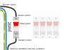
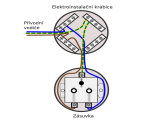
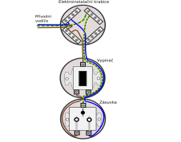
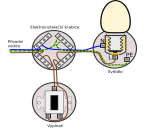

Zapojenie poistky a ističa
Každý elektrický okruh nie len v domácnosti musí biť istený a to hlavne proti zkratu alebo preťaženiu. K
tomuto istenie slúžia poistky a ističe. Elektrická pojistka sa pri vätščom prúde (v ampérach – A)
pretaví a tak preruší obvod. Po odstránení poruchy je potrebné poistku vždy vymeniť za novu. Elektrický
istič je tak tiež navrhnutý tak, aby pri prekročení prúdového zaťaženia rozpojil obvod. Po
odstranení poruchy ide však ističom opäť obvod zapnúť iba jednoduchým posunutím páčky.
Prívod elertiny do objektu je istený hlavnými poistkami (poprípade aj hlanými prepeťovímy bleskoistkami)
za nimi následuje hlavný istič a elektromer. Za elektromerom sa fázové vodiče delia na
jednotlivé okruhy a tie sa istia dalšími poistkami, ističi a poprípade (prúdovými chráničmi). Samostatný
okruh by mal mať svetla aj zásuvky na každom podlaží, kúpelňa, sporák, boiler, dielnňa…, a prípadne aj
dalšie silné spotrebiče.

Prepojenie ističov:
Preppojenie ističa:
Za nadriadený istič alebo poistku môžeme inštalovať ďalší istič pre ďalší okruh či spotrebič.
Tento istič musí mať prúdovú hodnotu vypnutia menšiu ako nadriadené ističe a poistky.
Vypneme nadriadený istič a skontrolujeme neprítomnosť napätia na všetkých vodičoch!
Prívodný vodič fáza (čierny, hnedý, šedý) priskrutkujeme na vstupnú svorku ističa. Pokiaľ nie je
uvedené od výrobcu inak, je jedno či sa jedná o vrchný či spodný kontakt.
Na výstupnú svorku ističa pripojíme vodič len vedie ku spotrebiču.
Dokončíme zapojenie napr. vedením vodičov do ďalšej elektroinstalačnej krabice.
Skontrolujeme zapojenie a zapneme istič. Vyskúšame funkčnosť.
Zapojenie by mala robiť osoba s platnou vyhláškou.
Čo znamená prierez kábla alebo prierez vodiča?
V bežnom hovore nám výrazy „kábel“ a „vodič“ často splývajú a používame ich ako synonymá. To
sa
potom väčšinou odráža aj na pojmoch ako „prierez kábla“ alebo „prierez vodiča“. Keď sa ale
pozrieme podrobnejšie, určité rozdiely tu nájdeme. Prierez kábla predstavuje celú reznú
plochu
kompletného kábla vrátane izolácie a opláštenia (1). Takto určený priemer je dôležitý,
pokiaľ
potrebujeme pre kábel vyvŕtať otvor s potrebným priemerom.
Naproti tomu prierez vodiča označuje prierez elektrického vodiča, resp. jednotlivých žíl
(2).
Nehrá pritom rolu, či sú žily tvorené jediným masívnym medeným drôtikom (pozri úvodný
obrázok)
alebo v prípade ohybného lanka, množstvom tenučkých jednotlivých drôtikov, ktoré spoločne
vytvárajú žilu.
Páčka hore u ističa znamená zapnutý stav. Na výstupnej svorke je prítomné napätie a môže prechádzať prúd.
Páčka dole u ističa znamemná vypnutý stav. Na výstupnej svorke nie je napätie a nemôže prechádzať prúd (pokiaľ
nie je porucha priamo na ističi). Aj pri blokácii páčky ističa sa pri skrate či preťažení musia vo vnútri
ističa vypnúť kontakty. Prelepovanie a iné blokovanie páčky teda nemá význam.
Pre istenie trojfázových strojov a zariadení je potrebné zapojiť trojfázový istič so spoločnou páčkou. Ten pri
preťažení jednej fázy dokáže vypnúť všetky fázy.
Ističe aj poistky musia byť v priestore (krabice, rozvadzača) do kterého nemá prístup nepovolaná osoba a
nemôže tak dôsť k dotyku na časti iba sú pod napätím a alebo môžu byť pod napätím pri poruche. Tieto
krabice musia byť konštruované pre prípadné zvýšenie tepelných účinkov pri prepálení poistky.
Pripojenie piostky (pokiaľ je potrebné):
Najskôr vypneme nadriadený istič a skontrolujeme neprítomnosť napätia na všetkých vodičoch!
Prívodný vodič fáza (čierny, hnedý, šedý) priskrutkujeme na vstupnú svorku poistkového púzdra.
Táto svorka je spojená vnútorným kontaktom, ktorý sa volá poistkový dotyk a má otvor ktorý
neumožňuje vložiť väčšiu poistku (na väčší prúd). Tento kontakt je pod napätím aj po prepálení
poistky a preto je horšie dostupný!
Na výstupnú svorku poistkového púzdra pripojíme vodič vedúco ďalej k ističu. Táto svorka je
spojená so závitom pre hlavicu. Závit je jednoduchšie dostupný a preto na ňom nie je po vytiahnutí alebo
prepálení poistky napätie.
Zaistite svorky púzdra proti nechcenému dotyku!
Do hlavice vložíme poistku odpovedajúcej hodnoty širším koncom dovnútra. Hlavicu s poistkou
našrobujeme do poistkového púzdra.
Za poistku zapojíme istič a dokončíme elektroinštaláciu vrátane kontroly.
Čo znamená prierez kábla alebo prierez vodiča?
V bežnom hovore nám výrazy „kábel“ a „vodič“ často splývajú a používame ich ako synonymá. To
sa
potom väčšinou odráža aj na pojmoch ako „prierez kábla“ alebo „prierez vodiča“. Keď sa ale
pozrieme podrobnejšie, určité rozdiely tu nájdeme. Prierez kábla predstavuje celú reznú
plochu
kompletného kábla vrátane izolácie a opláštenia (1). Takto určený priemer je dôležitý,
pokiaľ
potrebujeme pre kábel vyvŕtať otvor s potrebným priemerom.
Naproti tomu prierez vodiča označuje prierez elektrického vodiča, resp. jednotlivých žíl
(2).
Nehrá pritom rolu, či sú žily tvorené jediným masívnym medeným drôtikom (pozri úvodný
obrázok)
alebo v prípade ohybného lanka, množstvom tenučkých jednotlivých drôtikov, ktoré spoločne
vytvárajú žilu.
Základné zapojenie zásuvky 230V

Ako zapojiť elektrickú zásuvku?
- Najskôr vypneme istič a skontrolujeme neprítomnosť napätia na
všetkých vodičoch!
- Na ochranný kolík pripojíme žltozelený vodič.Tento vodič je
najdlhší, najviac na voľno aby
pri náhodnom vytrhnutí kabela zostal tento vodič pripojený najdlhšie.
- Na pravú svorku pripojíme modrý pracovný vodič (nulák, stredný
vodič).
- Na ľavú svorku pripojíme hnedý či čierny vodič fázy.
- Skontrolujeme zapojenie a zapneme istič. Vyskúšame funkčnosť.
- Zapojenie by mala robiť osoba s platnou vyhláškou.
⚠️Na čo je potrebné dávať POZOR pri zapájaní⚠️
Je potrebné dbať aby káble neboli zlomené a aby sa odizolované časti nedotýkali iných vodičov či
kovových častí okrem svorkovnice. Skrutky je potrebné utiahnuť aby sa vodiče nepovolili. Pri zlom
zapojení môže dôjsť k ohrozaniu majetku, zdravia či života osôb a zvierat.
Vodiče umiestnite okolo skrutiek tak, aby se doťahovaní skrutky viac zasúvali. Používajte
odpovedajíci prierez vodiča podľa záťaže spotrebiča. Každý okruh starostlivo istite ističom, ktorý
preruší iba fázový vodič (hnedý, čierny). Istič ani poistka nesmie prerušiť pracovný ani
ochranný vodič (modrý a zelený).
Ani improvizované řešení nesmí být nebezpečné. Nikdy se nesmí dostat napětí 230V na místa snadno
přístupná dotykem. Pamatujte i na kvalitní mechanické provedení tak, aby se používáním kabely či
krabice neuvolnily nebo aby nebyly náchylné umístěním k poškození, přestřižení, lámání.
V místech kde se vyskytuje voda (koupelna, kuchyně) umístěte veškerou elektroinstalaci s ohledem
na možnost stříkající vody z vodovodních baterií či sprchových hlavic. Tam kde není možné zvolit
ochranu vhodnou polohou instalujte krabice a zařízení se zvýšenou ochranou proti stříkající
vodě. V těchto prostorech je třeba užívat i proudový chránič. Všechny kovové plochy, předměty,
potrubí pospojujte žlutozeleným vodičem a spojte s hlavní zemnící svorkou domu.
Zapojenia kombinácie zásuvky vypínača a žiarovky
zásuvka + vypínač
Je dôležité dbať na to, aby káble neboli zlomené a aby sa odizolované časti nedotýkali iných
vodičov alebo kovových častí mimo svorkovnice. Skrutky treba utiahnuť, aby sa vodiče neuvolnili.
Pri nesprávnom zapojení môže dôjsť k ohrozeniu majetku, zdravia alebo života osôb a zvierat.
Vodiče umiestnite okolo skrutiek tak, aby sa pri utahovaní skrutky viac zasunuli. Používajte
odpovedajúci prierez vodiča podľa zaťaženia spotrebiča. Každý okruh dôkladne iste jističom,
ktorý preruší iba fázový vodič (hnedý, čierny). Jistič alebo poistka nesmie prerušiť pracovný
ani ochranný vodič (modrý a zelený).

Ako pripojiť elektrickú zásuvku s vypínačom:
- Najprv vypneme poistku a skontrolujeme absenciu napätia na
všetkých vodičoch!
- Na ochranný kolík zásuvky pripojíme žltozelený vodič. Tento
vodič je najdlhší, najviac
voľný, aby pri náhodnom vytiahnutí kábla zostal tento vodič pripojený najdlhšie.
- Na pravú svorku zásuvky pripojíme modrý pracovný vodič
(nulák, stredný vodič).
- Fázový hnedý (prípadne čierny) vodič vedieme na vypínač.
Tento jediný bude ovládaný
vypínačom.
- Fázový hnedý (prípadne čierny) vodič z vypínača spojíme s
ľavou svorkou zásuvky.
- Zkontrolujeme zapojenie a zapneme poistku. Vyskúšame
funkčnosť.
- Zapojenie by mala vykonávať osoba s platným nariadením.
Lze použít jednopólový vypínač (č.1) nebo schodišťový vypínač (č.6). Toto zapojení není
vhodné
pro vypínání velkých výkonů (silné motory, bojlery). Pro vypínání velkých výkonů se používá
tzv.
stykač.
⚠️Na čo je potrebné dávať POZOR pri zapájaní⚠️
Žiadne improvizované riešenie nesmie byť nebezpečné. Nikdy nesmie dôjsť k tomu, aby napätie 230V
bolo na miestach ľahko prístupných dotykom. Pamätajte aj na kvalitné mechanické vyhotovenie tak,
aby sa používaním káble alebo krabice neuvolnili alebo aby neboli náchylné k poškodeniu,
prerušeniu či lomeniu.
Na miestach, kde sa vyskytuje voda (kúpeľňa, kuchyňa), umiestňujte elektroinštaláciu s ohľadom
na možnosť striekajúcej vody z vodovodných batérií alebo sprchových hlavíc. Tam, kde nie je
možné zvoliť ochranu vhodnou polohou, inštalujte krabice a zariadenia s zvýšenou ochranou proti
striekajúcej vode. V týchto priestoroch je potrebné používať aj prúdový chránič. Všetky kovové
plochy, predmety, potrubie spojte žltozeleným vodičom a spojte s hlavnou zemnícou svorkou domu.
vypínač+žiarovka
Je třeba dbát aby kabely nebyly zlomené a aby se odizolované části nedotýkaly jiných vodičů či kovových
částí mimo svorkovnice. Šrouby je třeba utáhnout aby se vodiče nepovolily. Při špatném zapojení může dojít k
ohrožení majetku, zdraví či života osob a zvířat.
Vodiče umístěte kolem šroubů tak, aby se dotahováním šroubu více zasunovaly. Používejte odpovídající průřez
vodiče dle zátěže spotřebiče. Každý okruh pečlivě jistěte jističem jenž přeruší pouze fázový vodič (hnědý,
černý). Jistič ani pojistka nesmí přerušit pracovní ani ochranný vodič (modrý a zelený).
Ani improvizované řešení nesmí být nebezpečné. Nikdy se nesmí dostat napětí 230V na místa snadno přístupná
dotykem. Pamatujte i na kvalitní mechanické provedení tak, aby se používáním kabely či krabice neuvolnily
nebo aby nebyly náchylné umístěním k poškození, přestřižení, lámání.
V místech kde se vyskytuje voda (koupelna, kuchyně) umístěte veškerou elektroinstalaci s ohledem na možnost
stříkající vody z vodovodních baterií či sprchových hlavic. Tam kde není možné zvolit ochranu vhodnou
polohou instalujte krabice a zařízení se zvýšenou ochranou proti stříkající vodě. V těchto prostorech je
třeba užívat i proudový chránič. Všechny kovové plochy, předměty, potrubí pospojujte žlutozeleným vodičem a
spojte s hlavní zemnící svorkou domu.

Ako pripojiť elektrickú zásuvku s vypínačom:
- Najprv vypneme istič a skontrolujeme neprítomnosť napätia
na všetkých vodičoch!
- Elektrina by sa nemala dostávať na kovové kryty svietidla.
V prípade takejto poruchy je potrebné pripojiť ochranný žltozelený vodič na svorku PE.
Tento vodič je najdlhší, aby v prípade náhodného vytrhnutia kábla ostal pripojený
najdlhšie.
- Na závit objímky N svietidla pripojíme pracovný modrý vodič
(nulák, stredný vodič). Týmto vodičom prechádza elektrina len v prípade, že žiarovka
svieti.
- Hnedý alebo čierny vodič fázy, ktorý je trvale pod napätím
230V, pripojíme najprv do vypínača. Z protiľahlej svorky vypínača vedieme tento vodič na
spodný kontakt objímky svietidla L. Tento kontakt je ťažko dostupný pri výmene žiarovky.
- Modrý, hnedý (čierny) a žltozelený vodič by nemali byť
nikde vzájomne prepojené.
- Skontrolujeme pripojenie a zapneme istič. Otestujeme
funkčnosť.
- Pripojenie by mal vykonať osoba s platným osvedčením.
Lze použít jednopólový vypínač (č.1) nebo schodišťový vypínač (č.6). Toto zapojení není
vhodné
pro vypínání velkých výkonů (silné motory, bojlery). Pro vypínání velkých výkonů se používá
tzv.
stykač.
⚠️Na čo je potrebné dávať POZOR pri zapájaní⚠️
Ani improvizované řešení nesmí být nebezpečné. Nikdy se nesmí dostat napětí 230V na místa snadno
přístupná
dotykem. Pamatujte i na kvalitní mechanické provedení tak, aby se používáním kabely či krabice
neuvolnily
nebo aby nebyly náchylné umístěním k poškození, přestřižení, lámání.
V místech kde se vyskytuje voda (koupelna, kuchyně) umístěte veškerou elektroinstalaci s ohledem
na možnost
stříkající vody z vodovodních baterií či sprchových hlavic. Tam kde není možné zvolit ochranu
vhodnou
polohou instalujte krabice a zařízení se zvýšenou ochranou proti stříkající vodě. V těchto
prostorech je
třeba užívat i proudový chránič. Všechny kovové plochy, předměty, potrubí pospojujte
žlutozeleným vodičem a
spojte s hlavní zemnící svorkou domu.